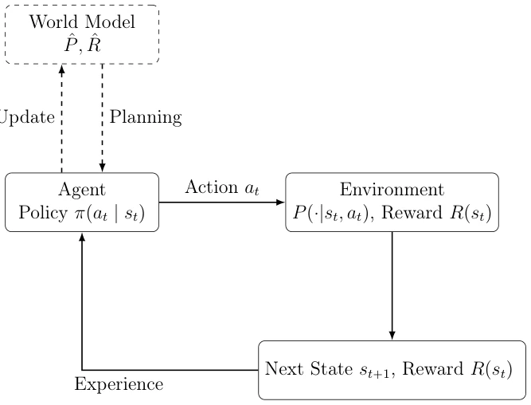
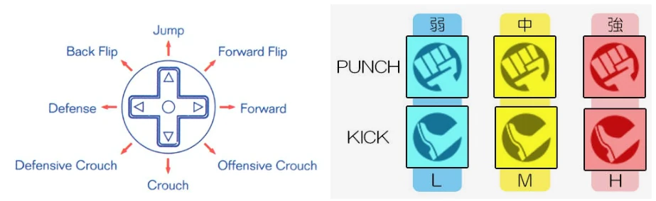
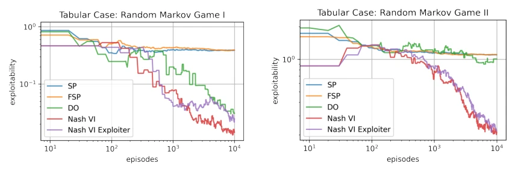
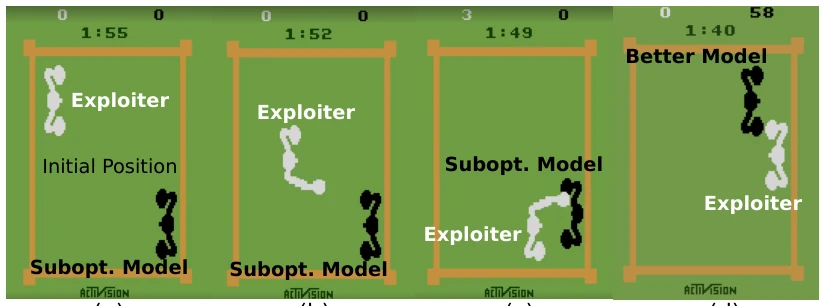
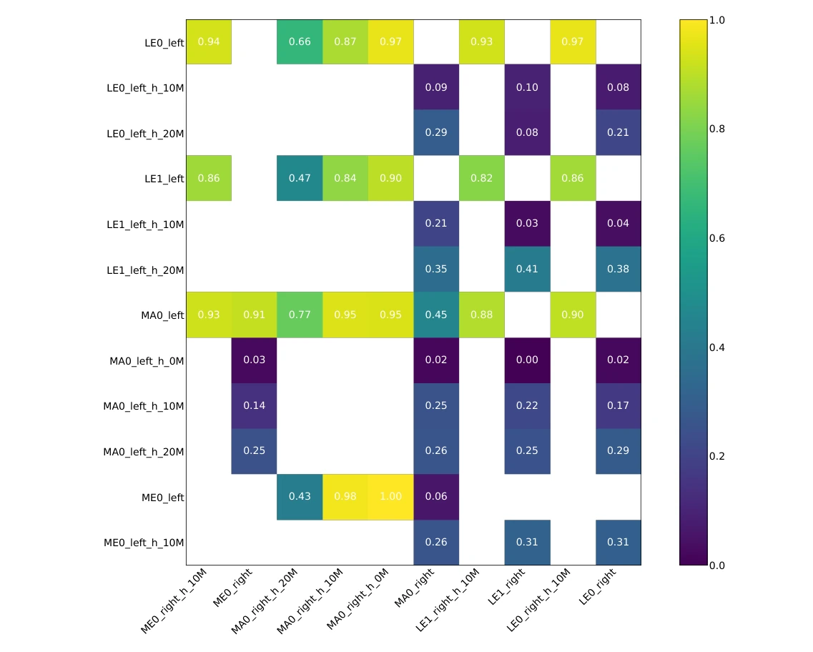
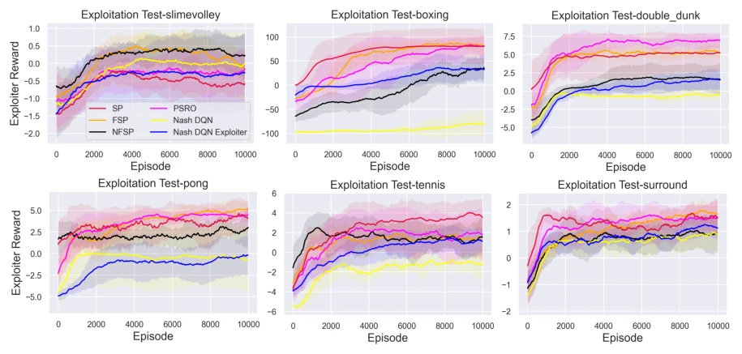
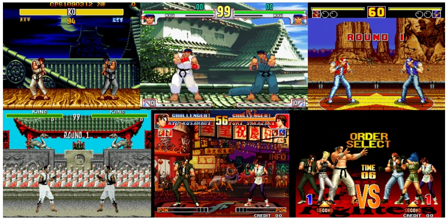
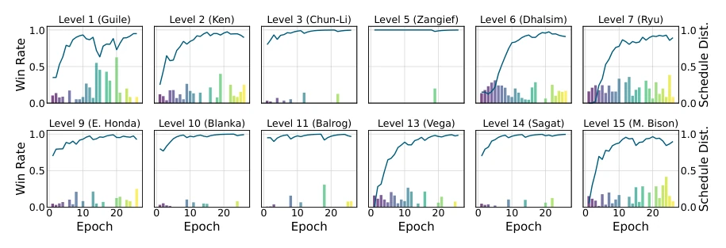
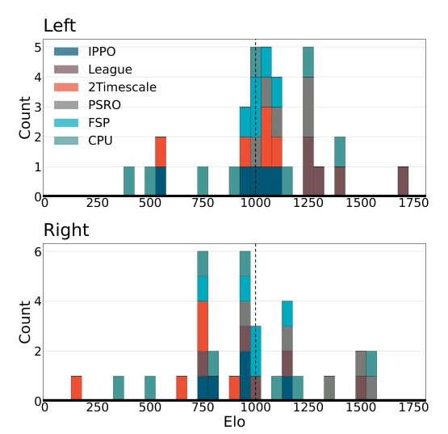
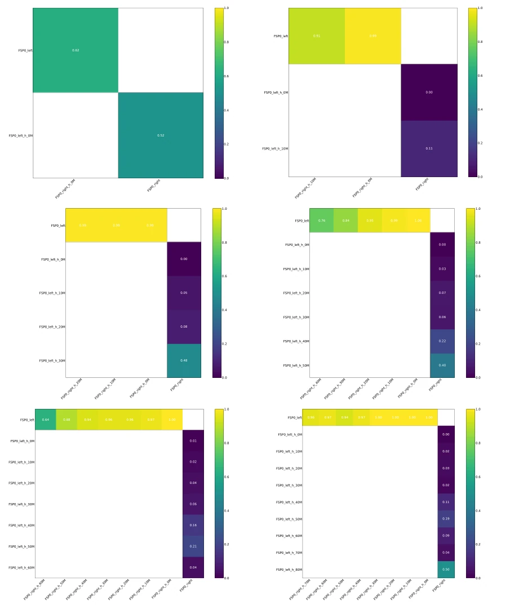

这篇博士论文像是一场 RL 的“穿越之旅”，从经典的博弈论算法一路狂奔到扩散模型和基础模型。前半部分在格斗游戏里卷 Nash 均衡，后半部分试图用扩散模型给 RL 喂“世界知识”。亮点是 FightLadder 平台和 Diffusion World Model 的探索，但把视频生成和 RL 硬凑在一起时，感觉像是在用火箭烧开水——技术很炫，但落地性存疑。特别是 Consistency Model 当策略，推理速度虽快，但稳定性如何？论文没给太多实锤。总的来说，算法扎实，但“基础模型”标签贴得有点急，部分工作更像是工程堆叠而非理论突破，建议后续多关注实际部署的延迟与显存开销，毕竟在 AGI 时代，光有理论不够，还得能跑在真机上。
This PhD thesis resembles a "time-travel journey" in RL, sprinting from classic game theory algorithms all the way to diffusion models and foundation models. The first half competes for Nash equilibrium in fighting games, while the latter half attempts to feed "world knowledge" to RL using diffusion models. The highlights are the exploration of the FightLadder platform and Diffusion World Model, but forcing video generation and RL together feels like using a rocket to boil water—technologically dazzling, but practicality is questionable. Especially when using Consistency Model as a policy, although inference speed is fast, how about stability? The thesis does not provide much solid evidence. Overall, the algorithms are solid, but the "foundation model" label is applied a bit hastily; some work seems more like engineering stacking than theoretical breakthroughs. It is suggested to focus more on actual deployment latency and VRAM overhead in the future, because in the AGI era, having theory alone is not enough; it must be able to run on real machines.
研究动机Motivation
传统 RL 样本效率低，且多智能体博弈中容易陷入局部最优或策略崩溃。现有工作如 Achiam et al., 2023 虽有大模型，但缺乏与 RL 决策的深度融合。Eloi Alonso et al., 2024 提出了 Diffusion World Models，但如何将其有效用于长视界规划仍是难题。论文试图解决两个核心痛点：一是多智能体环境下的策略鲁棒性（如 Nash 均衡求解），二是如何利用生成式先验知识提升 RL 的样本效率和泛化能力。现有基础模型往往作为表征工具，而非结构化先验，这限制了其在复杂动态环境中的决策能力。此外，Bai & Jin, 2020 虽涉及自我博弈，但在高维视频环境中仍需改进。
Traditional RL has low sample efficiency and easily falls into local optima or strategy collapse in multi-agent games. Existing works like Achiam et al., 2023 have large models but lack deep integration with RL decision-making. Eloi Alonso et al., 2024 proposed Diffusion World Models, but how to effectively use them for long-horizon planning remains a challenge. The thesis attempts to solve two core pain points: one is strategy robustness in multi-agent environments (such as Nash equilibrium solving), and the second is how to use generative prior knowledge to improve RL's sample efficiency and generalization ability. Existing foundation models are often used as representation tools rather than structured priors, which limits their decision-making ability in complex dynamic environments. Additionally, Bai & Jin, 2020 involves self-play, but still needs improvement in high-dimensional video environments.

Figure 1.1: A general reinforcement learning system: the agent interacts with the envi- ronment to optimize its policy for reward maximization, while optionally using a learned world model to predict dynamics and rewards, support planning, and improve policy optimisation.
方法Method
整体分为游戏博弈与基础模型两大板块。游戏部分采用 Nash-DQN 及其变体，结合 Self-play 和 Exploiter 机制求解零和博弈，确保策略在对抗环境中的鲁棒性。基础模型部分提出 Diffusion World Model (DWM)，将扩散过程作为环境动态预测器，支持基于模型的 RL 规划。创新点包括：1) 将 Consistency Model 直接作为 RL 策略类，利用其确定性推理加速采样；2) 提出 DOLLAR 方法，利用 RL 优化视频生成的多目标蒸馏，平衡质量与速度；3) 引入记忆机制的 Video World Model，解决长视界视频生成的累积误差问题。数据流上，从原始观测到 Latent 空间，再到动作条件化的扩散生成，形成闭环。此外，还探讨了 Offline RL 与 DWM 的结合，如 DWM-TD3BC，利用历史数据提升样本效率。
Overall divided into two major sections: game theory and foundation models. The game part adopts Nash-DQN and its variants, combining Self-play and Exploiter mechanisms to solve zero-sum games, ensuring strategy robustness in adversarial environments. The foundation model part proposes Diffusion World Model (DWM), using the diffusion process as an environment dynamics predictor, supporting model-based RL planning. Innovation points include: 1) Using Consistency Model directly as an RL policy class, leveraging its deterministic inference to accelerate sampling; 2) Proposing the DOLLAR method, using RL to optimize multi-objective distillation for video generation, balancing quality and speed; 3) Introducing a Video World Model with memory mechanism to solve the cumulative error problem in long-horizon video generation. In terms of data flow, from raw observations to Latent space, to action-conditioned diffusion generation, forming a closed loop. Additionally, the combination of Offline RL and DWM is explored, such as DWM-TD3BC, using historical data to improve sample efficiency.

Figure 4.2: Motion and attack action spaces of fighting games. Images are adapted from Instruction Manual of Street Fighter II.
Experiments cover Tabular Markov Games, FightLadder fighting games, Atari, and MuJoCo environments. Baselines include PPO, Nash Q-Learning, Decision Diffuser, etc. Metrics involve win rate, Elo rating, RTG value, and video generation quality (VBench). Results show that Nash-DQN-Exploiter is more robust in zero-sum games, with a smoother win rate curve; DWM outperforms single-step dynamic models in long-horizon planning, with smaller cumulative errors; Consistency Policy significantly reduces inference latency. Ablation studies show that memory frame noise levels affect long video coherence, and Latent Reward fine-tuning significantly improves video generation quality. Additionally, the impact of different diffusion steps on training and inference is compared, finding that too few steps lead to decreased generation quality.

Figure 3.2: Tabular case experiments on two randomly generated Markov games.

Figure 3.4: The key frames in Boxing exploitation test: (a-c) shows a sub-optimal model exploited by the exploiter. (d) shows our proposed algorithms learn hard-to-exploit policy robust against the turning-around strategy of the exploiter.

Figure 4.5: The payoff matrix for each pair of agents at a certain stage of League training. For league training, there is one main agent (MA), two league exploiters (LE0, LE1), and one main exploiter (ME) for each side (left or right). The name of each row indicates the agent information as Character_Side_Checkpoint. Checkpoint=h_xM represents a historical version of agent saved at x million steps. The value indicates the win rate of the left (row) player against the right (column) player. For instance, ME0_right wins all MA0_left_h_xM with high probability, indicating that main exploiters in the league can fully exploit previous main agents. Also the high win rate of MA0_left against all right agents (except MA0_right) shows that the main agent at current steps outperforms other agents i
其他图片Other Figures

Figure 3.3: The exploiter learning curves for exploitation tests on six two-player zero-sum video games.

Figure 4.1: FightLadder currently supports various cross-platform video fighting games: Street Fighter II (Genesis platform), Street Fighter III (Arcade platform), Fatal Fury 2 (Genesis platform), Mortal Kombat (Genesis platform), and The King of Fighters ’97 (Neo Geo platform).

Figure 4.4: The win rate curves and the scheduling distribution bar plot in sf_ryu_full_game via the proposed PPO with curriculum learning. Opponents of differ- ent characters are marked with different levels. Levels 4, 8, and 12 are omitted as they are bonus levels without fighting.

Figure 4.6: The distribution of Elo ratings for top ten agents from each baseline.

Figure 4.7: FSP details (training order from top left to bottom right): For FSP, there is one agent for each side (left or right). The name of each row indicates the agent information as Character_Side_Checkpoint. Checkpoint=h_xM represents a previous version of agent saved at x million steps. The value indicates the win rate of the left (row) player against the right (column) player.